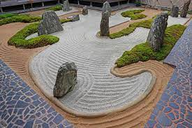

Recent Posts

IGCLA 2018
Dr.GEORGE JOSEPH THEMPLANGADIGCLA 2018
Green Toilets – An ENERGY Solution
KUTHIRA MALIGA PALACE
SOCIAL MEDIA FESTIVAL an idea whose time is here For Manipal university to experiment

Japanese Gardens
Dr.GEORGE JOSEPH THEMPLANGADMuch of the landscape of Japan, an island nation, consists of mountains and oceans. These ever-present mountains and oceans are reduced to two of the primary and enduring components of the Japanese Garden — rocks and water
Read More